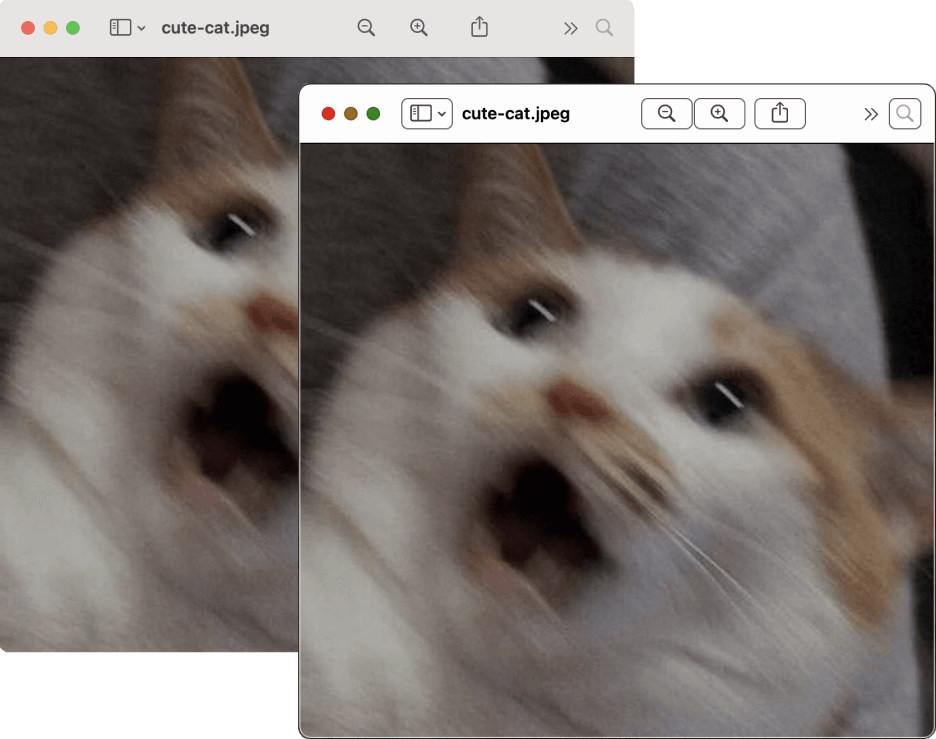

Режим повышенной контрастности в macOS и iOS увеличивает разницу между оттенками серого и делает границы элементов чётче. Сравните два окна программы для просмотра изображений. Первое окно с обычными системными настройками. У первого окна нет рамки, панель навигации светло-серого цвета, иконки для уменьшения, увеличения изображения, дополнительные настройки тоже без рамок.
Второе окно открыто в системе, где включён режим повышенной контрастности. Вокруг окна появилась чёрная рамка, заливка панели инструментов белая, кнопки управления окном ярче, вокруг кнопок для увеличения, уменьшения изображения, дополнительных настроек также появилась чёрная обводка. Название картинки тоже стало более чёрным.
В обоих случаях само изображение в окне предпросмотра изображения не изменилось.
